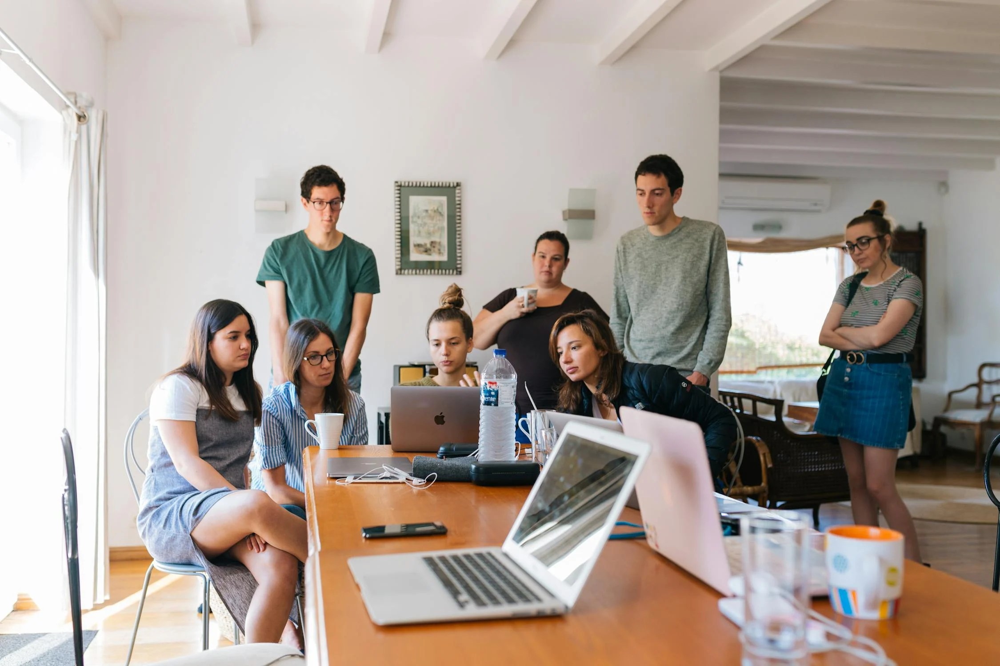
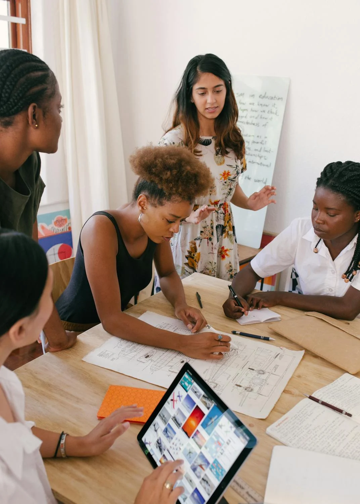
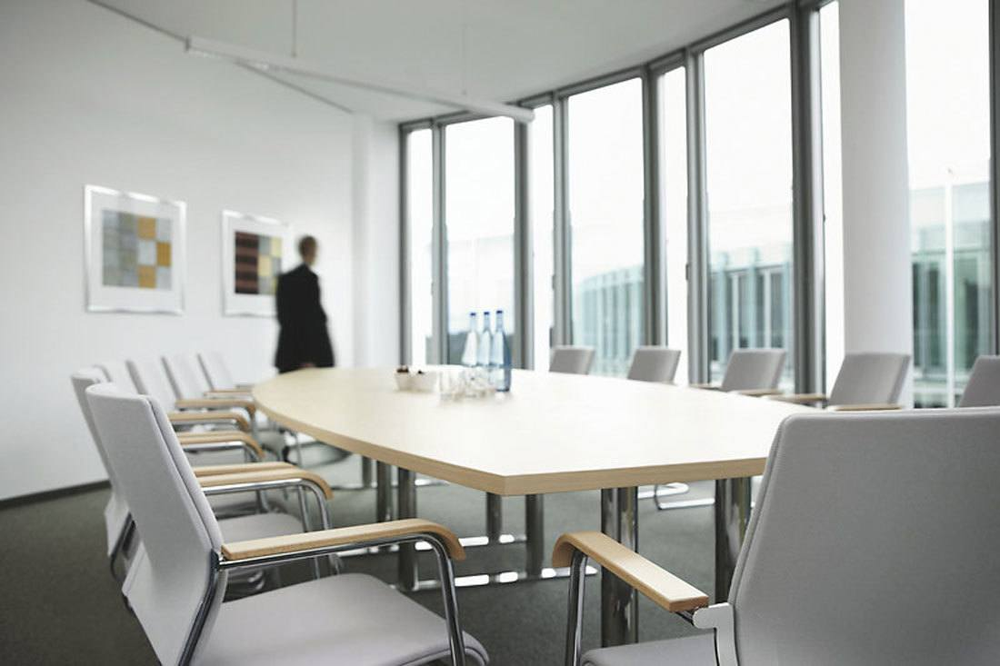

Coneix els nostres Projectes
Quatre iniciatives estratègiques dissenyades per acompanyar-te en cada etapa. Descobreix com ho fem.
Projecte Impulsa+45
Adaptació digital i emocional per a persones de més de 45 anys davant els reptes de la IA i els canvis laborals.
Objectius principals
- ›Reduir la bretxa digital amb eines pràctiques.
- ›Reforçar l’autoestima i posar en valor l’experiència.
- ›Millorar l’ocupabilitat i la resiliència professional.
- ›Fomentar una comunitat +45 de suport mutu.

Projecte Impulsa+Joves
Orientació i empoderament digital per a joves en situació de transició educativa, laboral o vital.
Objectius principals
- ›Definir l'itinerari personal i professional.
- ›Millorar competències digitals i emocionals.
- ›Apropar la IA i la tecnologia com a eines útils.
- ›Connectar joves amb recursos i referents locals.
Projecte Impulsa+Emprenedors
Suport pràctic per a persones que volen emprendre o transformar el seu projecte amb eines digitals i IA.
Objectius principals
- ›Validar idees de negoci amb eines digitals i IA.
- ›Millorar la comunicació i el màrqueting online.
- ›Dotar de recursos per a la gestió eficient.
- ›Fomentar la mentalitat emprenedora.

Projecte Impulsa+Dones
Acompanyar, empoderar i connectar dones en moments de canvi, oferint eines per redefinir el seu camí i projectar el seu valor.
Què treballarem?
- ›Redefinir-me amb força
- ›El meu valor, les meves decisions
- ›Xarxes de suport real
- ›Em projecte, em posiciono
Projectes en Construcció
El futur el co-creem junts. Aquests són els propers programes que estem desenvolupant per obrir nous camins.
Impulsa+ Equips
Fomentem la col·laboració i la integració de la IA per potenciar equips de treball diversos i preparats per als reptes del demà.
Impulsa+ Experiències
Donem veu a les històries personals i l'experiència vital, transformant-les en una font de valor, aprenentatge i connexió.

Impulsa+ Reinicia
Acompanyem en la reconstrucció de camins professionals, oferint eines per encaixar les peces d'un nou futur laboral en l'era digital.